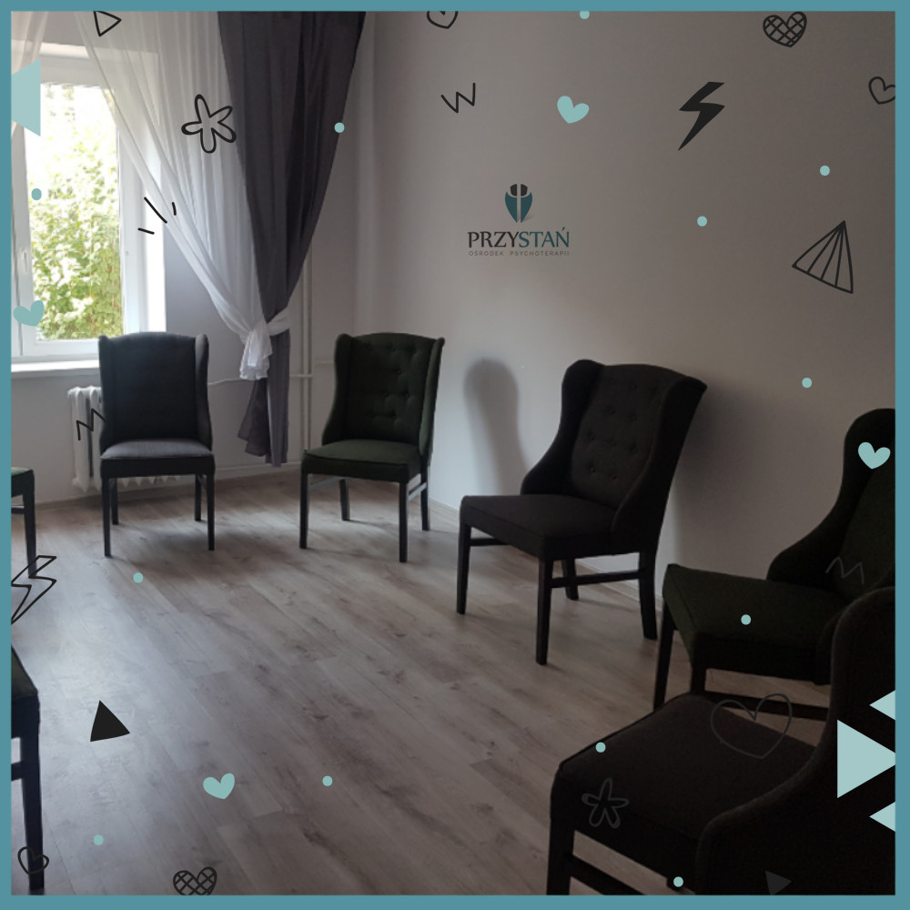

Grupa dla osób z trudnościami w relacjach
Relacje z innymi odgrywają ważną rolę w życiu każdego człowieka już od dnia narodzin. Potrzeba kontaktu jest jedną z podstawowych potrzeb. Reakcje innych kształtują w nas postrzeganie siebie, innych ludzi i świata. Rodzina, a następnie grupa rówieśnicza w szkole i kolejne grupy, do których przynależymy lub chcielibyśmy przynależeć, mogą wzmacniać nasze mocne strony i stwarzać możliwości, by rozwijać talenty. Mogą też podkopywać wiarę w nasze siły i poczucie własnej wartości. To w oczach innych ludzi przeglądamy się, by odpowiedzieć sobie na pytanie kim oraz jaki / jaka jestem. Dlatego grupy terapeutyczne mają w sobie tak duży potencjał.
Dla kogo wskazana jest psychoterapia grupowa:
– dla osób, które mają trudność w nawiązywaniu nowych relacji lub ich utrzymywaniu,
– dla osób, które obawiają się bliskości,
– dla osób, które w relacjach z innymi mają tendencję do wycofywania się,
– dla osób, które zbyt mocno angażują się w relacje z innymi, pozwalają im decydować o swoim życiu i obawiają się samodzielności,
– dla tych, którzy są impulsywni, którym trudno zapanować nad swoimi emocjami i zachowaniami,
– dla tych, którzy nie rozumieją swoich emocji, nie umieją ich nazwać, nie wiedzą, jak je adekwatnie wyrażać,
– dla osób odczuwających pustkę w życiu, zmagających się z brakiem celu i motywacji do działania,
– dla osób doświadczających stanów lękowych, obniżonego nastroju i nawracających kryzysów psychicznych,
– dla osób mających trudność z samoakceptacją i odczuwających silną presję oczekiwań innych.
W grupach, zwłaszcza psychoterapeutycznych, zazwyczaj odtwarza się większość ważnych dla nas relacji z innymi ludźmi. Daje to możliwość doświadczania ich w bezpiecznym środowisku – przeżywania, przyglądania się i rozumienia emocji, które temu towarzyszą. To także odpowiednie miejsce, by poznać i zrozumieć siebie, swoje obawy, lęki, trudności i zahamowania. Charter grupy pozwala na próbowanie nowych zachowań, przełamywanie dotychczasowych schematów działań, eksperymentowanie z nowymi sposobami bycia.
Celem grupy jest zwiększenie świadomości tego kim jestem i jakich wyborów dokonuję, pewności siebie, stabilności emocjonalnej i wewnętrznego poczucia bezpieczeństwa.
Grupa przeznaczona jest dla osób dorosłych.
Czas trwania grupy: 1,5 roku
Grupa ma charakter zamknięty. Oznacza to, że można zapisać się do niej, do czasu zamknięcia listy uczestników. Po tym terminie dołączenie do grupy nie będzie możliwe.
Grupa rozpocznie się po zebraniu się 8 uczestników.
KIEDY: środy 8.30 – 10.15
GDZIE: Ośrodek Psychoterapii Przystań
Nowowiejska 114/1, Wrocław
KOSZT: 480 zł / miesiąc
Udział w grupie poprzedzony jest konsultacjami indywidualnymi u prowadzących grupę.
Koszt konsultacji to 150 zł/ spotkanie.
ZAPISY do grupy:
telefonicznie: 603 493 288, 696 086 745
mailowo: martyna@korz.ec, agata.hensoldt@osrodekprzystan.com
Grupę prowadzić będą:
Agata Hensoldt – Jankowska
psycholog, certyfikowana psychoterapeutka, absolwentka Studium Psychoterapii i Studium Psychoterapii Grupowej w Laboratorium Psychoedukacji, pracuje w nurcie psychodynamicznym z osobami dorosłymi.
Martyna Korzec
psycholożka, psychoterapeutka, absolwentka Całościowego Kursu Psychoterapii we Wrocławskim Instytucie Psychoterapii, pracuje w nurcie integracyjnym z osobami dorosłymi.
